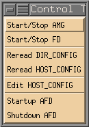

To control and monitor the AFD there is an X11 interface, with the
following appearance:

As shown this dialog is divided into four main areas: menu, heading, connection
and status.
The menu area has five pull down buttons: Host, View, Control and Setup.
If your afd_ctrl window does not have all buttons shown and described here,
then the system administrator did not allow you to use this function.

- Start/Stop queue allows you to start or stop the queue of one
or more selected hosts. When the queue is stopped the queue led
turns brown.
- Start/Stop transfer allows you to start or stop the transfer
of one or more selected hosts. When the transfer is stopped the
transfer led will be orange. Stopping the transfer means that
messages are still being generated, but the FD will not distribute
the files.
Care should be taken when choosing this option. Watch the job queue
number so it does not reach a critical stage. Use start/stop queue
if lots of files are being distributed for this alias.
- When you want to stop a host and do not want to collect the data for
it, disable it by pressing the Enable/Disable host button.
NOTE: All current jobs for this host will be deleted when disabling
a host.
- Switch host allows to change the
destination address of selected hosts. To see whether a certain host
has a secondary address look in
afd_info dialog.
- Retry can only be used when the error
counter (ec) is larger then zero. It is useful when you do not want
to wait for the automatic retry of the AFD, i.e. you want to speed
things up.
- If an error has occurred, or you wish to see what is happening during
a transmission, press the Debug button. To watch the output
you will have to open the Transfer Debug Log window by pressing on
the Transfer Debug Log button. The
contents of the output log is described in
Log Files.
- Test the connection to the selected host. Currently only
the ping and traceroute tests have been implemented.
- The Info button opens the afd_info
dialog for this host.
- Configuration shows the DIR_CONFIG configuration of the
selected host.
- Exit will close the afd_ctrl window and all other windows that
have been started from this dialog. It does not effect any of the
main process of the AFD running in the background.

- System Log opens the
system dialog. See Log Files for
a more detailed description of the output.
- Transfer Log opens the
transfer dialog. See Log Files
for a more detailed description of the output. When one or more hosts
where selected the output shown will only show data of these hosts.
- Transfer Debug Log opens the
transfer debug dialog. See
Log Files for a more
detailed description of the output. When one or more hosts where
selected the output shown will only show data of these hosts.
- Input Log opens the
input dialog. See Log Files for
a more detailed description of the output.
- Output Log opens the
output dialog. See Log Files for
a more detailed description of the output.
- Delete Log opens the
delete dialog. See Log Files for
a more detailed description of the output.
- Load shows the current load of either: Files send per second,
KBytes second per second, Connections done per second and the
number of Active-Transfers.

- Start/Stop AMG starts or stops the AMG.
Stopping the AMG means that no more messages will be generated for
the FD.
- Start/Stop FD starts or stops the FD.
Stopping the FD should only be done for a short time on systems with
lots of traffic. Otherwise the AMG keeps generating messages until
the file system is full or it cannot create any new directories to
store the files.
- When there have been any changes made in the DIR_CONFIG file and
these changes should be activated, press Reread DIR_CONFIG.
If there where any changes in the HOST_CONFIG file it will
incoperate these changes as well. So it is not necessary to
press the Reread HOST_CONFIG button.
- To activate changes made in the HOST_CONFIG file by hand (not
using the edit_hc dialog), press the Reread HOST_CONFIG
button.
- Edit Host opens the edit_hc dialog.
- Startup AFD allows to start all processes of the AFD.
- Whereas Shutdown AFD will stop all process of the AFD.

- Pressing Font size will give you a list of fonts which,
when selected, will be used for the afd_ctrl window and all other
windows called from it.
- Number of rows allows to change the maximum number of rows
to be displayed for one column.
- Line Style allows to change the appearance of a single line.
You can currently choose three different items: Bars only, Characters
only and Characters and bars (default).
- Save Setup will save the above settings in the file
.afd_ctrl.setup.$DISPLAY in the users home directory. So when you start
afd_ctrl again it will start with these settings.
 The heading is just a quick reminder of what the fields in the
connection area mean:
The heading is just a quick reminder of what the fields in the
connection area mean:
| dest |
The destination alias where the the files are being distributed to. |
fc |
This is the file counter field. It shows the total number files that
are still to be distributed for this destination. |
| fs |
The total file size that is still to be distributed. |
| tr |
Shows the overall current transfer rate. |
| ec |
This is the error counter for this destination. |
The connection area is the actual area which monitors and controls the AFD.
The meaning of each field is shown below:

| 1 |
Destination alias |
This field holds the name of the destination alias. The background
color indicates the current status of the connection:
 |
No transfer. Waiting for files to come. |
 |
Transfer active. Files are currently being transfered. |
 |
Error. Files cannot be transmitted. It turns red when the error
counter has reached the value set in the
HOST_CONFIG file. |
 |
There is no entry of this host in the DIR_CONFIG. |
 |
This host is disabled. All files in the input directories for
this host will be deleted. |
|
| 2 |
Debug Led |
If this is yellow debug is on for this destination. Do not let
debug on for very long on high traffic connections. Since this means
lots of data gets written to the log file. See
Log Files for more
information of the debug output. |
| 3 |
Queue Led |
The color of this LED tells what the AMG will do when files arrive
for this destination.
 |
Normal status. Messages will be generated for the FD. |
 |
Queue stopped by user. Files for this host are saved in a
a separate directory and no messages are generated. |
 |
Queue stopped automatically. Files for this host are saved in a
a separate directory and no messages are generated. |
|
| 4 |
Transfer Led |
The color of this LED tells what the FD will do when a message arrives
for this destination.
|
Normal status. Files will be distributed by the FD. |
 |
Transfer stopped by user. No files will be distributed. |
|
| 5 |
Detailed Selection |
Shows all details for this job. |
| 6 |
Connection |
This field shows the number of files currently
being transfered for this host. The background color indicates the
current status of the process.
 |
Normal status. No transfer is active for this process. |
 |
FTP Connecting Phase. This includes makeing the connection
to the remote FTP-server, setting transfer mode and sending
user name and password. |
 |
FTP Transfer active. There are still two files to be transfered. |
 |
FTP Bursting. During an active transmission two more files have
arrived, these have been appended to the current transfer job. |
 |
Closing Phase. This includes removing any lock files and
closing the connection to the remote server. This is valid
only for FTP and WMO. |
 |
Mail transfer active. There are still two files to be mailed. |
 |
WMO transfer active. There are still two files to be send via
TCP/IP socket. |
 |
WMO burst transfer active. During an active transmission two
more files have arrived, these have been appended to the current
transfer job. |
 |
Error. An error has occurred while trying to distribute files. |
|
| 7 |
File Counter |
Total number of files that still have to be send for this
destination. |
| 8 |
File Size |
Total number of bytes that still have to be send for this destination.
The last character always shows the current unit: B for Bytes, K for
Kilo Bytes, M for Mega Bytes, G for Giga Bytes and T for Tera
Bytes. |
| 9 |
Transfer Rate |
Displays the total current transfer rate of all connections to this
destination. |
| 10 |
Error Counter |
Number of errors that occurred for this destination. This will always
be reset to zero when a file has been distributed successfully. If
the number of errors is larger then two digits a greater sign (>)
will be displayed. |
| 11 |
Error Counter Bar |
Displays a bar for the number of errors for this destination. The
color of the bar will be green when the error counter is low and
will increasingly turn red the larger the error counter becomes. |
| 12 |
Transfer Rate Bar |
Displays a yellow bar to display the transfer rate to this
destination graphically. |
Selecting can be done by either holding down the shift key and pressing the
left mouse button (temporary selection) or by holding the ctrl key and the
left mouse button (permanent selection). The background of the line will
change to black or grey respectively.

| 1 |
AMG |
LED to show current status of process AMG (Automatic Message
Generator).
 |
Normal status. Process is up and running. |
 |
Process has terminated normally. |
 |
Abnormal termination. Process has been killed and is
not running any more. |
NOTE: This LED must be so
that the AFD can function properly.
|
| 2 |
FD |
LED to show current status of process FD (File Distributor).
|
Normal status. Process is up and running. |
|
Process has terminated normally. |
|
Abnormal termination. Process has been killed and is
not running any more. |
NOTE: This LED must be so
that the AFD can function properly.
|
| 3 |
Archive Watch |
LED to show current status of process Archive Watch.
|
Normal status. Process is up and running. |
|
Process has terminated normally. |
 |
Abnormal termination. Process has been killed and is
not running any more. |
|
| 4 |
AFDD |
LED to show current status of process AFDD.
|
Normal status. Process is up and running. |
|
Process has terminated normally. |
|
Abnormal termination. Process has been killed and is
not running any more. |
|
| 5 |
System Log |
Radar that shows the five last type of messages in the system log. |
| 6 |
Transfer Log |
Radar that shows the five last type of messages in the transfer log. |
| 7 |
Job Queue Counter |
This counter shows how many jobs are currently being queued. |
The job details can be viewed by clicking with the right mouse button and
holding the Ctrl button simultaneously when the mouse cursor is on a
connection field. It shows a more
detailed view of what the current job is doing.

 Index
Index